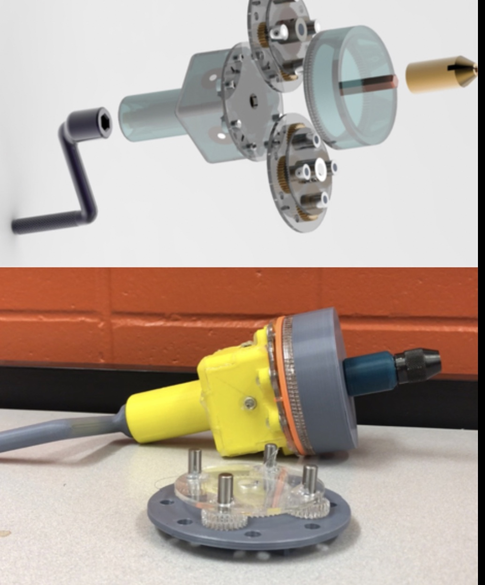

My Senior Design Project was commissioned by Sargent and Lundy. This research project was motivated by the desire for more data regarding the evaporation of water when subjected to forced convection, which is highly applicable to maintaining the water level of nuclear spent fuel pools, where spent nuclear fuel rods rest with water shielding the rods and preventing radiation from spreading from the rods and contaminating the environs. To conduct this experiment, our team constructed a testing apparatus out of a multiple rectangular aquariums, sous vide precision cookers, thermocouples, RH transducers, an anemometer, an Arduino, foam boards, and a wind tunnel provided by Talbot Laboratory at the University of Illinois. The experiment measured evaporation rate with respect to water temperature, speed of air flow over the tank, and length of the tank.
For the Junior Design course (ME370) at the University of Illinois (Urbana-Champaign), students were asked to design an automatic vegetable slicer that functioned off a single motor.
For the Sophomore Design course (ME270) at the University of Illinois (Urbana-Champaign), students were assigned an existing product and asked to manufacture an improved prototype. My team was assigned a hand drill. We redesigned the hand drill to have multiple gear ratios.
